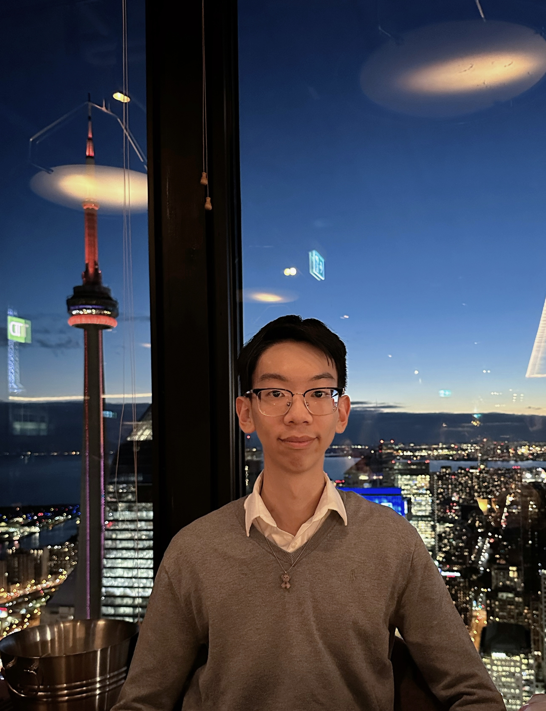
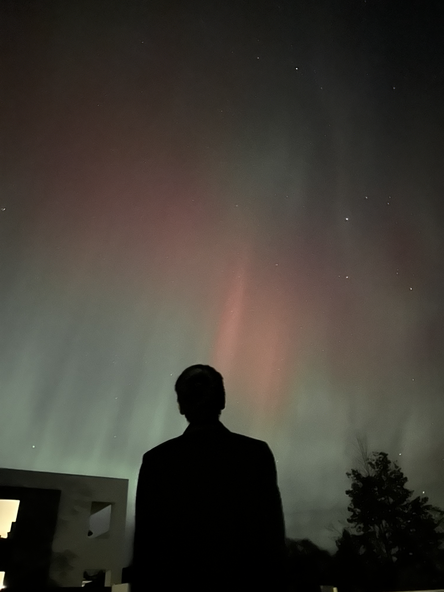
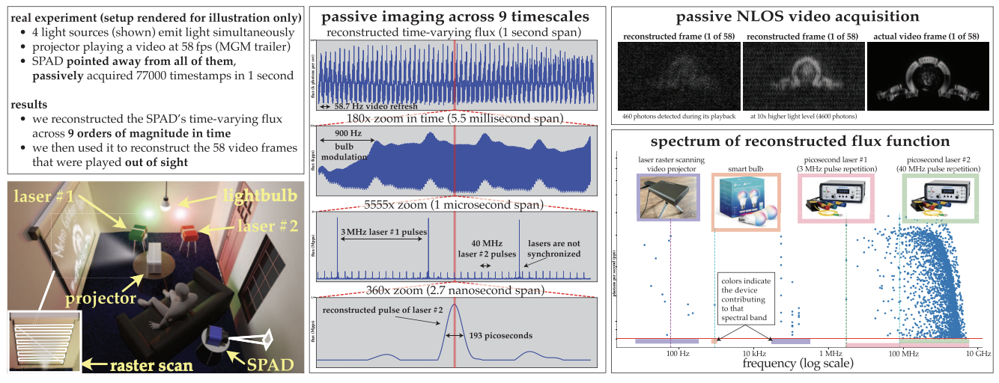
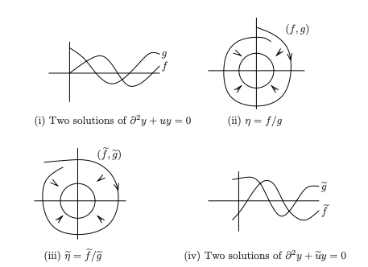
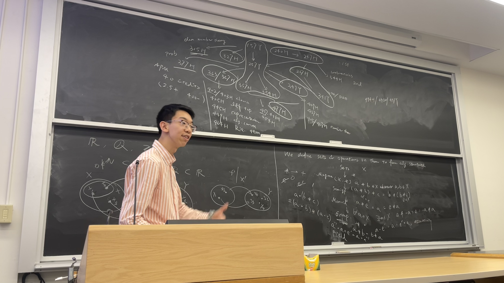

|
Howard Xiao I'm an incoming PhD student at Stanford Computational Imaging Lab, adviced by Prof. Gordon Wetzstein. I will start my PhD journey this September. Previously, I completed my Bachelor's degree at the University of Toronto, specializing in Computer Science and Mathematics. I am currently a researcher in the Toronto Computational Imaging Group (TCIG) under Prof. Kyros Kutulakos and Prof. David Lindell. I'm currently doing research in single-photon 3D imaging, building on TCIG's prior work of passive ultra-wideband single-photon imaging. In addition, I am working with Prof. Boris Khesin at the University of Toronto and Prof. Anton Izosimov at the University of Arizona on smooth groupoids and algebroids and their applications in dynamical systems. I aspire to design imaging systems that combine computational and mathematical principles to push the boundaries of conventional imaging systems. |
Recent Updates & BioSeptember 2023
Joined TCIG
I joined the Toronto Computational Imaging Group (TCIG) as an undergraduate researcher.
May 1st, 2024
Bell Internship
I completed a full-year internship at Bell Canada as a software developer.
May 2024
USRA
I received the Undergraduate Student Research Awards (USRA) of $7500 from NSERC.
June 2025
CVPR 2025 Paper
Opportunistic Single-Photon Time of Flight was accepted to CVPR 2025 with oral presentation. See you in Nashville!
September 2025
Joining Stanford
I will be joining the Stanford Computational Imaging Lab as a PhD student this September.
|
|
|
|
 |
My childhood: I've spent over ten years of my childhood in Tianjin, China. I love the culture, the food, and above all, the tea there. My youth: I am proudly Canadian, and an Oakviller, although now I spend more time in Toronto. Studies: In 2020, I joined the University of Toronto amid Covid. I am currently in my last year of undergraduate studies, graduating in June 2025. I specialize in Computer Science and Mathematics. Research: I have been reseearching computational imaging since 2023 with Prof. Kyros Kutulakos and Prof. David Lindell. I have also participated in several abstract mathematics research on finite- and infinite-dimensional smooth groups and their applications in mathematical physics. Please see further details below. Teaching: I have been a Teaching Assistant in the Department of Mathematics at the University of Toronto for 3 semesters. I have TA-ed first-year linear algebra courses, including MAT240H1 and MAT247H1. I have some notes and talks, which are included below. Work: I have completed a full-year internship at Bell Canada, during which I developed internal AI-based software tools using langchain and Ollama. |
ResearchBroadly speaking, my current research interest is in designing imaging systems that surpass conventional technologies and reveal previously unseen phenomena. I envision future imaging systems to be biologically, mathematically, and computationally inspired, end-to-end optimized, requiring minimal energy, gaining maximal sensory information, flexible to various tasks with on-sensor and off-sensor learning, robust to challenging scenarios, and suitable for specific tasks.During my current research in TCIG, I am working with single-photon avalanche diodes (SPADs) — sensors capable of timestamping photon arrivals with extreme precision and no read noise. This sensor unlocks exciting capabilities for both passive and active imaging tasks and presents applications in other domains such as biomedical science, neuroscience, astronomy, and chemistry. In my mathematics research, I am developing mathematical structures for smooth groupoids and connecting these novel structures to dynamical systems in mathematical physics. The dynamical systems framework is highly relevant to imaging systems that manipulate light, analyze dynamics in light-matter interaction, model wave propagation, or optimize optical components over time. |
 |
Computational Imaging |
|
|
Opportunistic Single-Photon Time of Flight
Sotiris Nousias*, Mian Wei*, Howard Xiao, Maxx Wu, Shahmeer Athar, Kevin J. Wang, Anagh Malik, David A. Barmherzig, David B. Lindell, Kiriakos N. Kutulakos. *Joint first authors CVPR, 2025 (Oral Presentation) Project website / Paper / Poster An approach that uses single-photon cameras to harvest ambient light in our environment, such as those from asynchronous pulsed lidar systems, for passive 3D vision. |
|
 |
Passive Ultra-wideband Code Release
August, 2024 Github / Paper Code pipeline taking in an increasing stream of photon timestamps captured by unsynchronized single-photon avalanche diode (SPAD) and completes steps of ultra-wideband probing, frequency thresholding and 1-dimensional flux reconstruction for multiple asynchronous periodic sources (unsynchronized picosecond lasers, projectors, etc.) |
{kind=link}
Mathematics |
|
 |
Broken Virasoro Groupoid
Howard Xiao, Anton Izosimov, Boris Khesin. In preparation, 2025 Understand the structure of central extensions of the Virasoro groupoid and algebroid, classify their cocycles and co-adjoint actions, and study the corresponding equations in mathematical physics. |

|
Lie Groups and Lie Algebras
Summer, 2023 I completed a four-month independent reading course with Prof. Eckhard Meinrenken at the University of Toronto. I studied the actions of Lie groups and Lie algebras, compact Lie groups, maximal tori, and the classification of finite-dimensional compact Lie groups using root systems. |
TeachingTA: In both winter semesters of 2024 and 2025, I am TA-ing for MAT247H1: Algebra II course at the University of Toronto (taught by Prof. Eckhard Meinrenken). I also TA-ed MAT240H1: Algebra I, taught by Prof. Mathilde Gerbelli-Gauthier in Fall 2024. Talk: I have given a talk at the Canadian Undergraduate Mathematics Conference (CUMC) 2023 on gaining intuition behinds analysis using everyday language analogies. The video link is here. See also my notes on this topic. (For U of T students: the material roughly coincides with MAT157Y1 but is presented using analogies from natural languages. ) Other Notes: Please see here for another set of notes titled "Abstract Algebra Toolbox". I started typing this set of notes under the impression that manipulation of groups, rings, and fields is really applying certain set of tools in a toolkit. I think presenting in this way makes it more organized. This set of notes follows Abstract Algebra by Dummit and Foote. |
 |